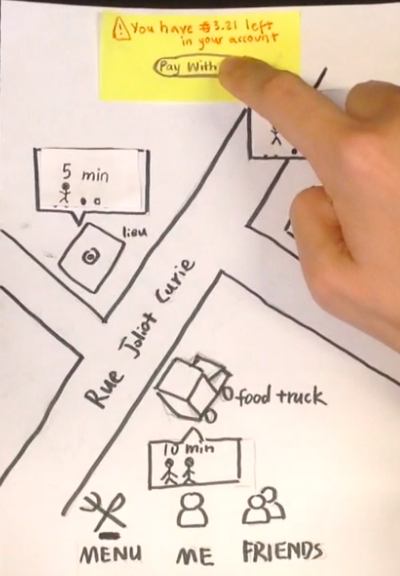
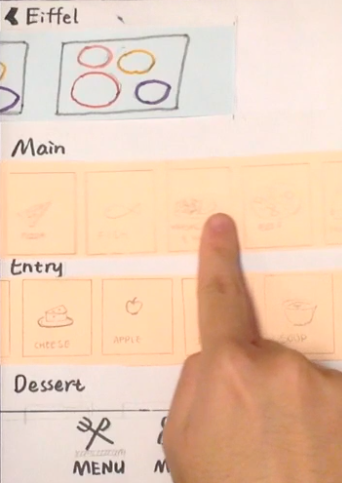
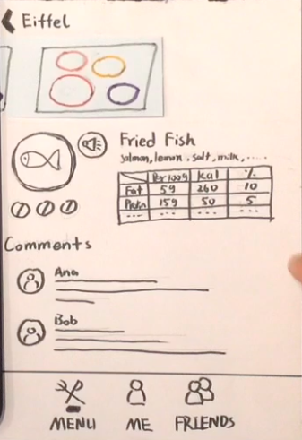
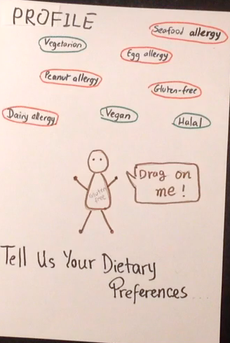
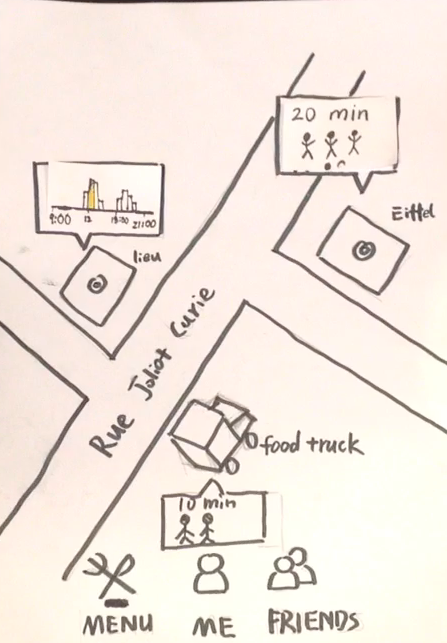
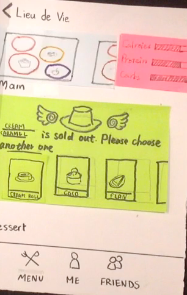

Design a student-centered dining experience by reducing wait time, track calories, and customizing menu choice.
Crous is a French organization that provides accommodation and meals for students. We tried to improve the dinning experience at Crous restaurant and cafeteria for students. We interviewed eight users using critical incident interview and made a questionnaire which received 24 responses.
Here are some results from the questionnaire.
From the interview and questionnaire results, we found that there were 4 common problems.
Ming
24, international student
Céline
23, French student
Kyler
26, exchange student athlete
We generated some ideas by oral brainstorming trying to solve these problems. Then we voted to select better ideas.
The selected ideas are:
This technique is to bring users and designers together for collaborative exploration of ideas. We designed 3 activities to help us generate ideas in specific directions.
Users will see some pictures of different kinds of food and link whatever they think about to the food.Users will group some kinds of food by color according to their feel.
This activity gave us some hints about what kind of information users wanted to know about food. The result was similiar to what we expected. Users cared about ingredients, nutrition and flavor. But using color to group food was not a good idea, since users had different understanding about colors.
When I think of food, I think ____. The cafeteria helps me achieve this by ___, but doesn’t take into account ___.
This activity made it more clear about user needs.
In groups of 2, describe your lunch experience at Crous restaurants. What are the top 3 drawbacks? Rank your order (add as necessary), and explain why
This activity helped us understand the real problems and supported what we got from interviews and the questionnaire.
Nearby
Menu
Details
Add a dish
Filter
Last menu
In the redesign part, we included several socio-technical principals in our design. We considered situated action and co-adaptation.
Situated action is about situations beyond planning and how to act in unforeseen circumstances. Co-adaptation is about re-interpret use.
Our classmates did a walkthrough on our video and gave us some feedbacks.
Profile
Busy time
When sold out
